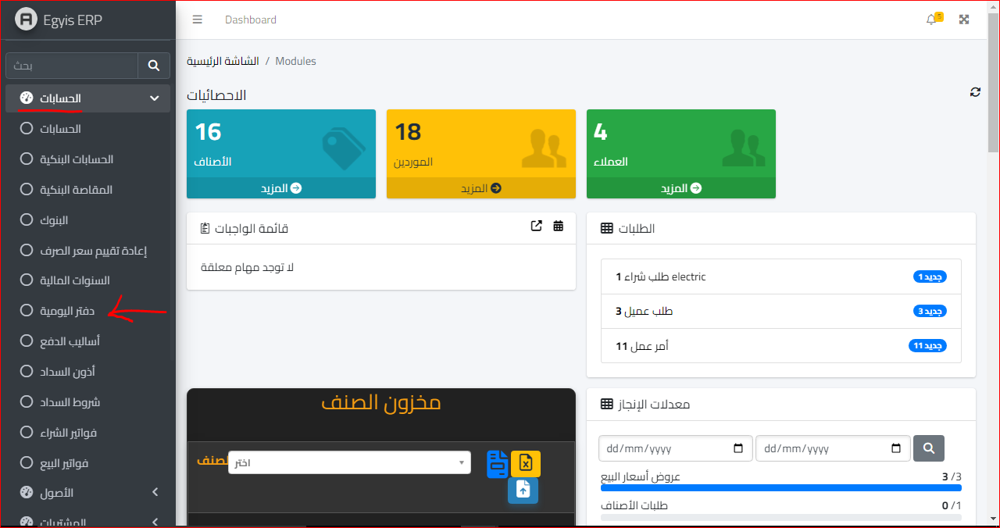
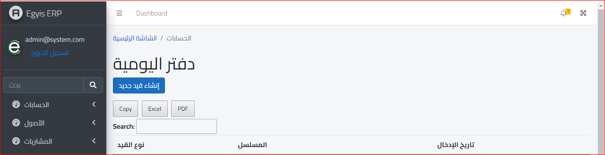
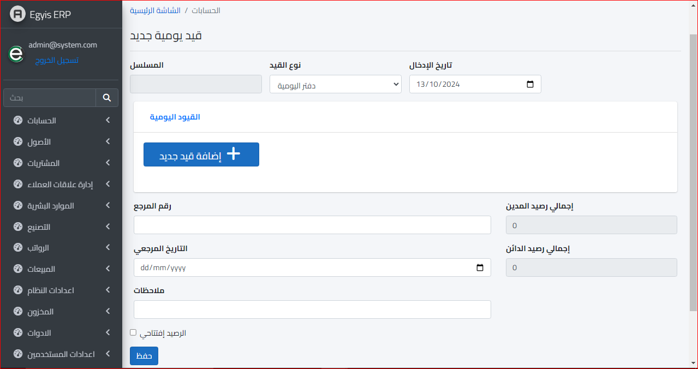
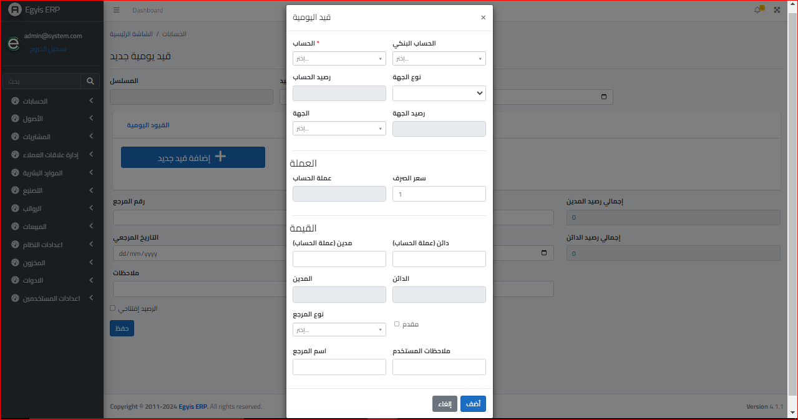
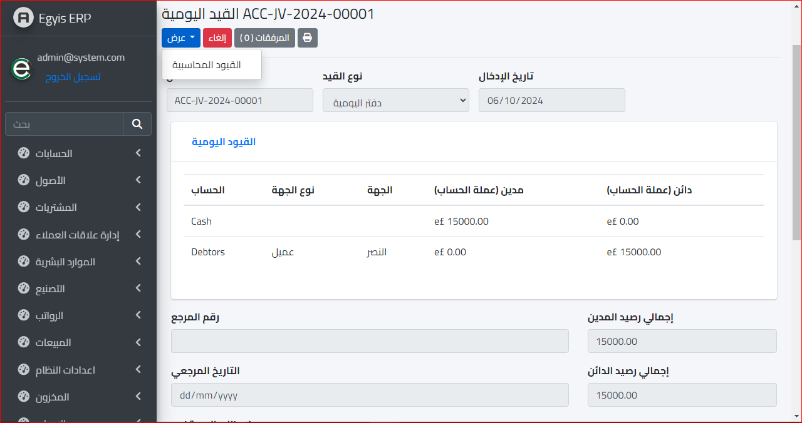
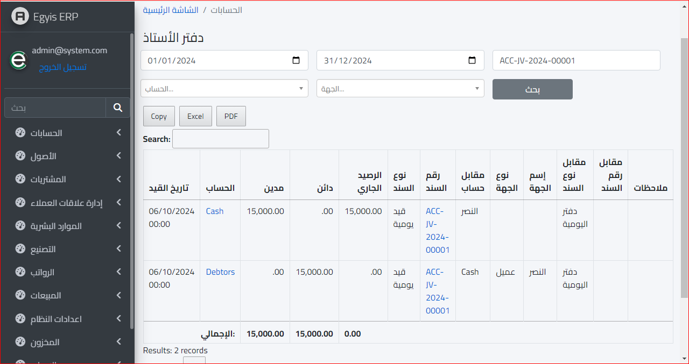

دفتر اليومية
يتم تعريف دفتر اليومية على أنه أحد أهم السجلات المحاسبية التي تبدأ بها مراحل الدورة المحاسبية
وهو عبارة عن صفحات يتم فيها تسجيل المعاملات المالية في حسابات تفصيلية، ثم إعداد القيود
المحاسبية لهذه المعاملات وأهمها القيد البسيط والمركب، ويمكن استخدام سجلات دفتر اليومية
لتسوية الحسابات الأخرى مثل دفتر الأستاذ ومن ثم ميزان المراجعة والقوائم المالية.
ولفتح دفتر اليومية يتم الذهاب الى موديول الحسابات واختيار قائمة دفتر اليومية كالتالي :
ثم ستفتح الشاشة التالية :
وبعد ذلك نختار انشاء قيد جديد وهي كالتالي :
ثم نختار إضافة قيد جديد و ستفتح النافذة التالية :
ثم يتم إدخال البيانات الخاصة بالقيد المحاسبي مع مراعاة طرفي القيد " المدين " - " الدائن " وسيظهر القيد كالتالي :
ولعرض القيود المحاسبية في دفتر الاستاذ يتم الضغط على قائمة عرض ونختار القيود المحاسبية :
وهكذا سيظهر قيد اليومية في دفتر الأستاذ